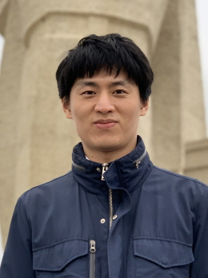

Members
Professor

Jong-Jin Baik
Postdoc. Fellows
Joohyun Lee
- 2023 Ph.D. in Atmospheric Science, Seoul National University
- Cloud microphysics
- Numerical precipitation prediction
- jhlee93@snu.ac.kr
Ph.D. Students
Seong-Ho Hong
- 2020 B.S. in Earth and Environmental Sciences, Seoul National University
- Urban impacts on precipitation
- Numerical precipitation prediction
- hsh4662@snu.ac.kr
Abeda Tabassum
- 2018 B.S. in Disaster Science and Management, University of Dhaka
- 2019 M.S. in Disaster Science and Management, University of Dhaka
- Urban heat islands
- Urban impacts on local meteorology
- abedatabassum@snu.ac.kr
Kyeongjoo Park
- 2022 B.S. in Earth and Environmental Sciences, Seoul National University
- Urban heat island–heat wave interaction
- Urban impacts on weather, climate, and air quality
- kjmon121@snu.ac.kr
Undergraduate Interns
Ph.D. Alumni
Jae-Jin Kim
- 2001 Ph.D. in Environmental Science and Engineering, Gwangju Institute of Science and Technology
- Thesis title: Flow and pollutant dispersion in urban street canyons
- Affiliation: Professor, Division of Earth and Environmental System Sciences, Pukyong National University, Korea

Sang-Hyun Lee
- 2008 Ph.D. in Atmospheric Science, Seoul National University
- Thesis title: Development of a vegetated urban canopy model and its application to urban heat island simulations
- Affiliation: Professor, Department of Atmospheric Science, Kongju National University, Korea
Ji-Young Han
- 2010 Ph.D. in Atmospheric Science, Seoul National University
- Thesis title: Convectively forced mesoscale flows and cloud-aerosol interactions
- Affiliation: Senior research scientist, Korea Institute of Atmospheric Prediction Systems, Korea
Young-Hee Ryu
- 2012 Ph.D. in Atmospheric Science, Seoul National University
- Thesis title: Urban impacts on local circulation and air quality
- Affiliation: Associate professor, Department of Atmospheric Sciences, Yonsei University, Korea
Seung-Bu Park
- 2013 Ph.D. in Atmospheric Science, Seoul National University
- Thesis title: Turbulence coherent structures and scalar dispersion over heated urban surfaces
- Affiliation: Assistant professor, School of Environmental Engineering, University of Seoul, Korea
Kyung-Hwan Kwak
- 2014 Ph.D. in Atmospheric Science, Seoul National University
- Thesis title: Microscale flow, gas-phase chemistry, and dispersion in urban areas
- Affiliation: Associate professor, School of Natural Resources and Environmental Science, Kangwon National University, Korea
Gantuya Ganbat
- 2015 Ph.D. in Atmospheric Science, Seoul National University
- Thesis title: Local circulations in mountainous urban areas
- Affiliation: Assistant professor, Faculty of Raw Materials and Environmental Engineering, German-Mongolian Institute for Resources and Technology, Mongolia
Hyunho Lee
- 2016 Ph.D. in Atmospheric Science, Seoul National University
- Thesis title: Effects of in-cloud turbulence on clouds and precipitation
- Affiliation: Associate professor, Department of Atmospheric Science, Kongju National University, Korea
Jaemyeong Mango Seo
- 2018 Ph.D. in Atmospheric Science, Seoul National University
- Thesis title: Dynamics and modeling of thermally and orographically forced flows and convection
- Affiliation: Postdoctoral fellow, Los Alamos National Laboratory, U.S.A.
Jambajamts Lkhamjav
- 2018 Ph.D. in Atmospheric Science, Seoul National University
- Thesis title: A quasi-stochastic collection model and cloud and precipitation modeling
- Affiliation: Associate professor, Department of Applied Mathematics, National University of Mongolia, Mongolia

Beom-Soon Han
- 2019 Ph.D. in Atmospheric Science, Seoul National University
- Thesis title: Large-eddy simulations of urban turbulence, boundary layer, and air quality
- Affiliation: Assistant professor, Department of Environment and Energy, Semyung University, Korea
Han-Gyul Jin
- 2021 Ph.D. in Atmospheric Science, Seoul National University
- Thesis title: Development of new accretion parameterizations and their applications to cloud and precipitation modeling
- Affiliation: Assistant professor, Department of Atmospheric Sciences, Pusan National University, Korea
Sungju Moon
- 2021 Ph.D. in Atmospheric Science, Seoul National University
- Thesis title: High-dimensional Lorenz systems, atmospheric predictability, and data assimilation
- Affiliation: Assistant professor, Department of Data, Media, and Design, Nevada State University, U.S.A.
Tanvir Ahmed
- 2021 Ph.D. in Computational Science and Technology, Seoul National University
- Thesis title: Observed characteristics and modeling of monsoonal precipitation in Bangladesh and northeast India
- Affiliation: Associate professor, Department of Physics, Shahjalal University of Science and Technology, Bangladesh
Jihoon Shin
- 2023 Ph.D. in Atmospheric Science, Seoul National University
- Thesis title: Development of a stochastic convection parameterization and its application to climate modeling
- Affiliation: Assistant professor, Division of Earth and Environmental System Sciences, Pukyong National University, Korea
Joohyun Lee
- 2023 Ph.D. in Atmospheric Science, Seoul National University
- Thesis title: Cloud and precipitation studies using disdrometer observations and models
- Affiliation: Postdoctoral fellow, Research Institute of Basic Sciences, Seoul National University, Korea